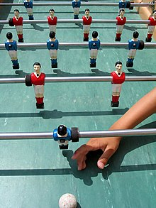
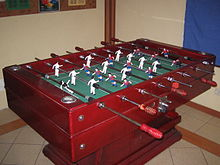
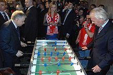

Piłkarzyki, futbol stołowy, piłka stołowa, trambambula (ang. Table football, niem. Tischfußball) – gra 2- lub 4-osobowa, imitująca prawdziwy mecz piłki nożnej.
Jest bardzo popularna w barach, szkołach. Występuje w wersji rekreacyjnej, jak i automatowej (przed rozpoczęciem gry trzeba włożyć monetę). Realizowana może być również jako sport.
|  |  |  |
|
Piłkarzyki (na zdjęciu francuski stół Bonzini) |
Stół do gry w piłkarzyki |
Lech Kaczyński i Leo Beenhakker grają w piłkarzyki |
|---|
Plac gry ma najczęściej wymiary 70 cm na 105 cm. Piłkę kontroluje się za pomocą tak zwanych grilli, do których przymocowane są figurki zawodników (najczęściej w różnych kolorach dla różnych drużyn), które można ciągnąć bądź pchać lub obracać, co powoduje odpowiednio: przyciągnięcie figurek z danego grilla do siebie (na prawą stronę pola gry), odepchnięcie figurek (na lewą stronę gry) i kopanie figurkami. Gra wykorzystuje zasadę zachowania pędu i kąta odbicia.
Celem gry jest strzelenie przeciwnikowi jak największej liczby goli przy stracie jak najmniejszej ich liczby. Najpopularniejszy system ustawienia figurek to 1-2-5-3. Ustawienie to dzieli boisko na trzy części: strefa obrony, strefa pomocy i strefa ataku. Strefa pomocy jest bardzo ważna. To właśnie w niej jest rozpoczynana gra (wrzucana piłeczka). Jest ona również najbardziej zagęszczoną strefą (każda strona ma w niej 5 piłkarzyków). Przejście tej strefy oznacza przejście z obrony do ataku lub odwrotnie.
W strefie obrony trzeba zablokować strzał przeciwnika i wykopać piłkę do strefy ataku lub bezpośrednio oddać strzał na bramkę przeciwnika. W strefie ataku trzeba strzelić bramkę, a po ewentualnej stracie piłki starać się uniemożliwić przeciwnikowi wyjście z tej strefy.
Za wynalazcę gry uważa się Francuza Luciena Rosengarta (1881–1976), który zbudował pierwszy stół piłkarzykowy (w Europie). W oparciu o ten pomysł szwajcarska firma „Kicker” z siedzibą w Genewie stworzyła model stolika do gry w piłkarzyki. Stoły te stały się tak popularne w Szwajcarii, Niemczech i Belgii, że słowo „Kicker” stało się synonimem futbolu stołowego. Pierwszy patent na stół piłkarzykowy przypisuje się Alejandro Finisterre (1919–2007) w 1937.
W 2002 powstała ITSF (International Table Soccer Federation – Międzynarodowa Federacja Futbolu Stołowego). Organizacja ta ma na celu: promowanie futbolu stołowego jako dyscypliny sportowej, regulowanie zasad współzawodnictwa sportowego (przepisy oraz zasady zawodów) oraz staranie o wpisanie futbolu stołowego na listę MKOL.
W 2009 powstał Polski Związek Futbolu Stołowego. Jako związek stowarzyszeń, PZFS zajmuje się rozwojem i popularyzacją piłkarzyków jako sportu w Polsce oraz stara się o wpisanie piłki stołowej na listę sportów Ministerstwa Sportu i Turystyki.